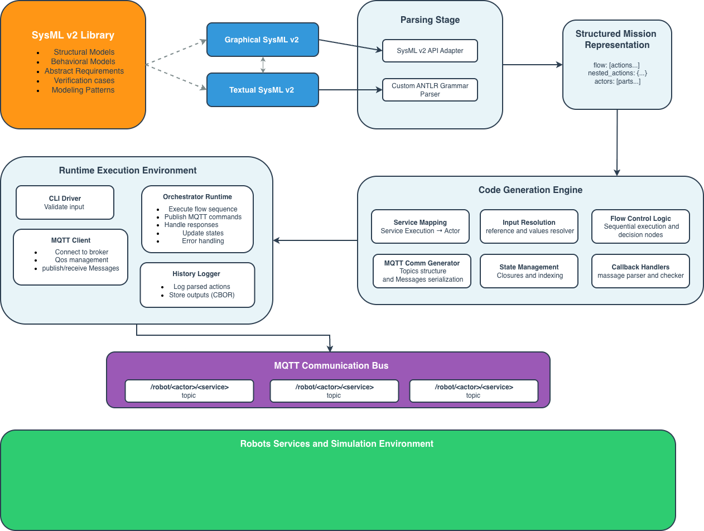

Model-driven Execution Tool for hEterogeneous rObot oRchestration
Transform SysML v2 models into executable heterogeneous multi-robot systems
MAESTRO enables domain experts to model complex multi-robot missions at a high level of abstraction using SysML v2 and automatically transforms these models into executable systems with MQTT-based orchestration and Gazebo simulation.
Tampere University | Johannes Kepler University Linz
Platform-independent service choreographies with flexible actor-service mapping and dynamic task allocation
Support for both graphical SysML v2 models (via API) and textual notations (via custom ANTLR grammar)
Python orchestration code with MQTT communication, state management, and callback handlers
Seamless coordination of diverse robot types (aerial, ground, manipulator) with different capabilities
From high-level requirements to low-level execution logs with integrated verification mechanisms
Physics-based simulation for validation before physical deployment with MQTT bridges
Warehouse logistics scenario: Drone scans for empty racks, forklift places pallets
Three-stage transformation pipeline: Parsing → Code Generation → Runtime Execution
Complete implementation with ANTLR parser, code generation engine, and MQTT orchestrator
View on GitHubReusable modeling patterns, structural elements, behavioral specifications, and verification cases
Explore LibraryFull methodology, case study results, and evaluation submitted to ICRCA 2025
Read Paper